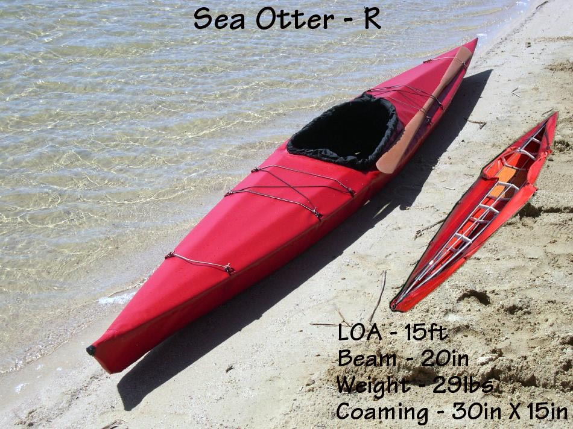

| (New) Sea Otter - R (PVC Skin) | Menu Previous Page Next Page |
|
 The Sea Otter-R folder at the lake. This design incorporates new features such as a breakdown aluminum / PVC sleeve coaming, aluminum stem plates, a raised flat aft deck for greater gear storage, and a 42in (106cm) folded length. Specs include a 15ft (4.6m) length, 14ft (4.25m) waterline, a 20in (51cm) beam, and a displacement of 240lbs. With an 18oz sq.yd. PVC skin, a 29lb (13.2kg) total weight and under $400.00US cost to build , the Sea Otter-R is a true lightweight. Fore and aft deck zippers have since been installed. Several pages of construction details can be found in the Designs Menu ( Sea Otter ). Use the (BACK) key to return. |
|